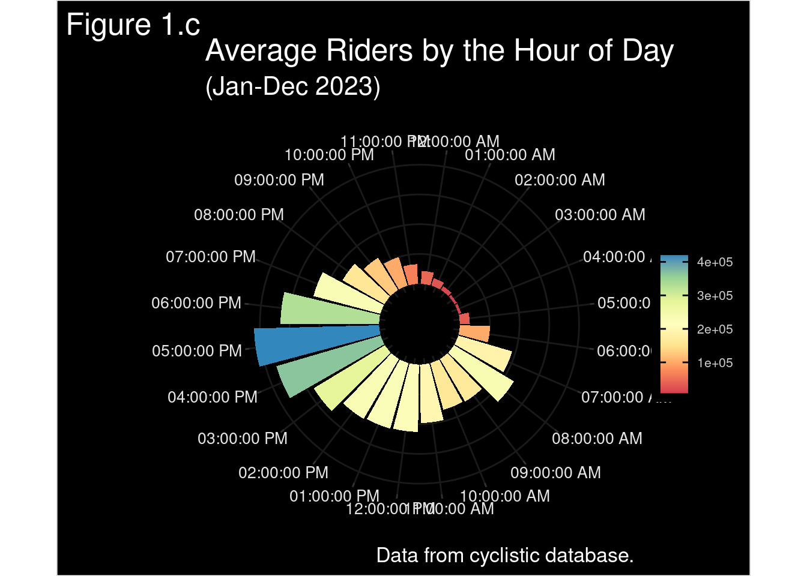
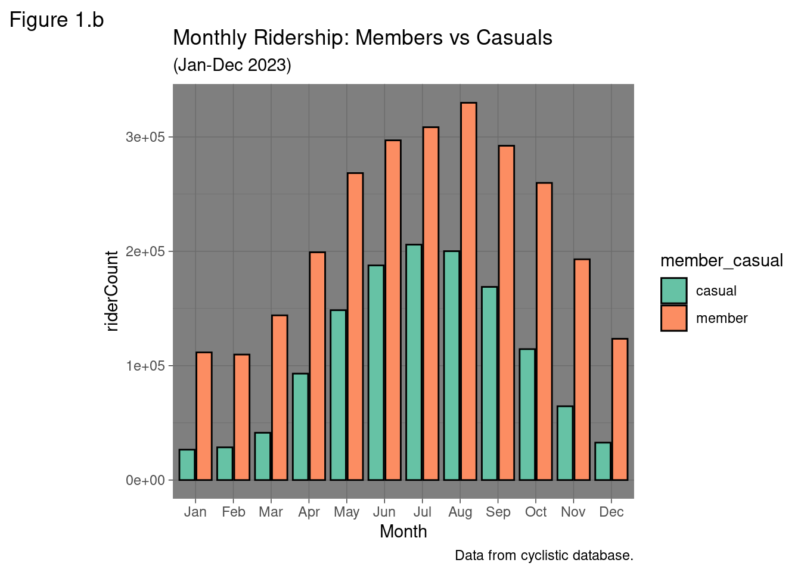
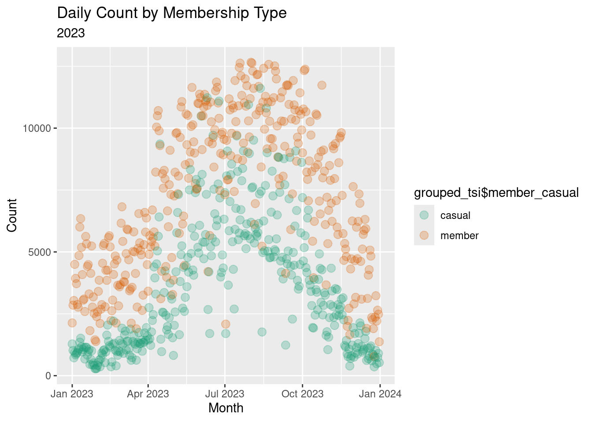
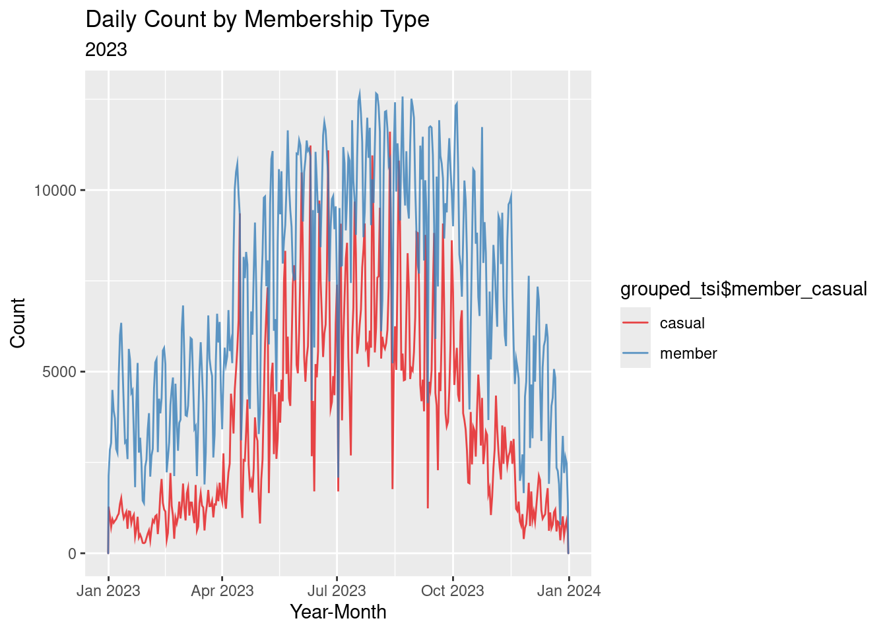
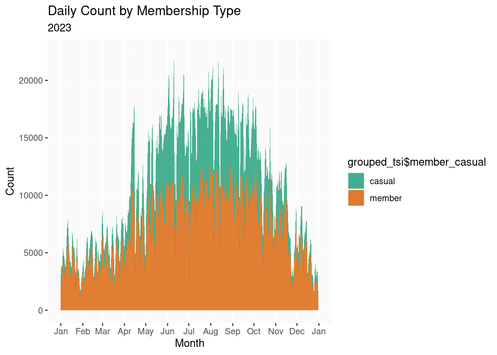
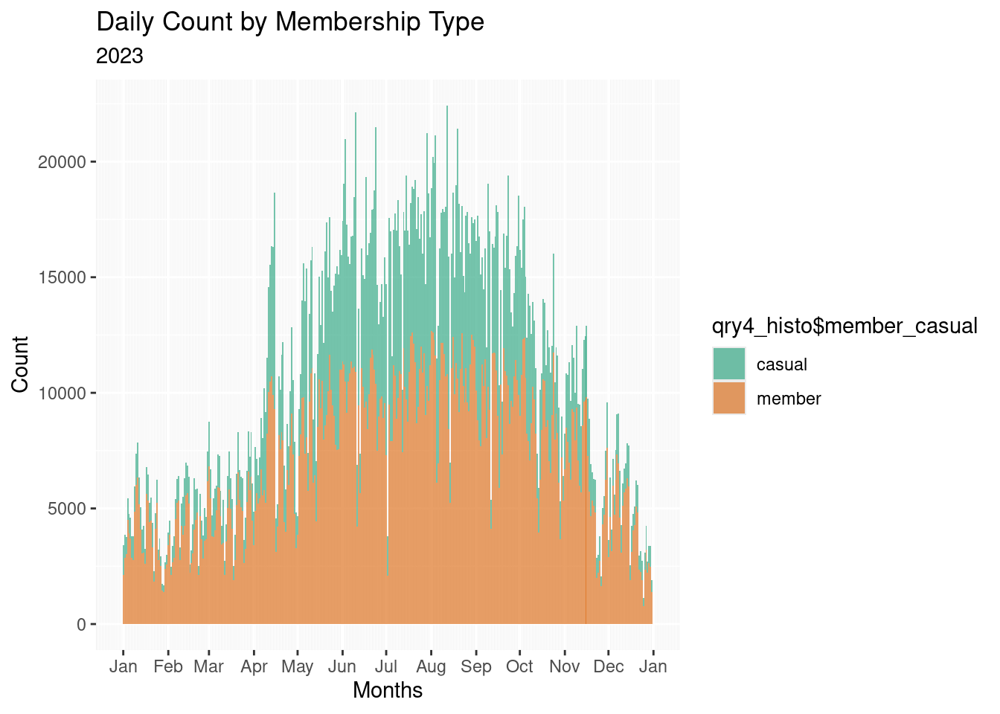
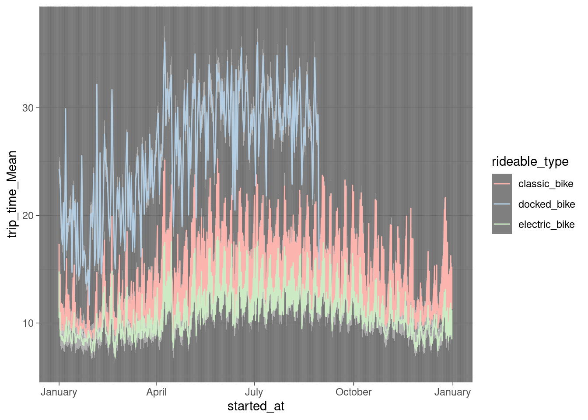
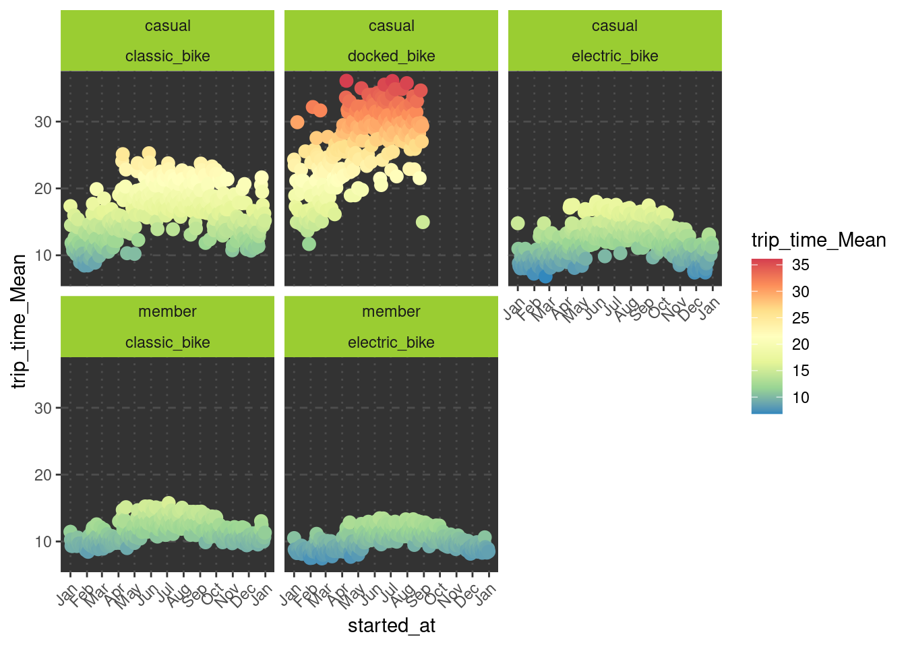

success status_code resumefrom
1 TRUE 200 0
2 TRUE 200 0
3 TRUE 200 0
4 TRUE 200 0
5 TRUE 200 0
6 TRUE 200 0
7 TRUE 200 0
8 TRUE 200 0
9 TRUE 200 0
10 TRUE 200 0
11 TRUE 200 0
12 TRUE 200 0
url
1 https://divvy-tripdata.s3.amazonaws.com/202301-divvy-tripdata.zip
2 https://divvy-tripdata.s3.amazonaws.com/202302-divvy-tripdata.zip
3 https://divvy-tripdata.s3.amazonaws.com/202303-divvy-tripdata.zip
4 https://divvy-tripdata.s3.amazonaws.com/202304-divvy-tripdata.zip
5 https://divvy-tripdata.s3.amazonaws.com/202305-divvy-tripdata.zip
6 https://divvy-tripdata.s3.amazonaws.com/202306-divvy-tripdata.zip
7 https://divvy-tripdata.s3.amazonaws.com/202307-divvy-tripdata.zip
8 https://divvy-tripdata.s3.amazonaws.com/202308-divvy-tripdata.zip
9 https://divvy-tripdata.s3.amazonaws.com/202309-divvy-tripdata.zip
10 https://divvy-tripdata.s3.amazonaws.com/202310-divvy-tripdata.zip
11 https://divvy-tripdata.s3.amazonaws.com/202311-divvy-tripdata.zip
12 https://divvy-tripdata.s3.amazonaws.com/202312-divvy-tripdata.zip
destfile error type modified
1 tempZips/202301-divvy-tripdata.zip <NA> application/zip 2023-02-07 19:58:38
2 tempZips/202302-divvy-tripdata.zip <NA> application/zip 2023-03-07 22:28:12
3 tempZips/202303-divvy-tripdata.zip <NA> application/zip 2023-04-06 20:38:59
4 tempZips/202304-divvy-tripdata.zip <NA> application/zip 2023-05-04 19:43:25
5 tempZips/202305-divvy-tripdata.zip <NA> application/zip 2023-06-08 22:17:13
6 tempZips/202306-divvy-tripdata.zip <NA> application/zip 2023-07-13 21:22:44
7 tempZips/202307-divvy-tripdata.zip <NA> application/zip 2023-08-14 12:28:28
8 tempZips/202308-divvy-tripdata.zip <NA> application/zip 2023-10-12 05:35:18
9 tempZips/202309-divvy-tripdata.zip <NA> application/zip 2023-10-12 05:35:18
10 tempZips/202310-divvy-tripdata.zip <NA> application/zip 2023-11-13 16:38:10
11 tempZips/202311-divvy-tripdata.zip <NA> application/zip 2023-12-05 18:28:19
12 tempZips/202312-divvy-tripdata.zip <NA> application/zip 2024-01-04 19:48:23
time
1 0.949237
2 0.940734
3 1.038178
4 1.161054
5 1.377657
6 1.429683
7 1.732399
8 1.798923
9 1.965646
10 1.471834
11 1.774590
12 1.459267
headers
1 HTTP/1.1 200 OK, x-amz-id-2: OJ7GBXNACsIyYhJHz/yUjT0LOy5OHSXZ7ONspXtPTpwU4ERQZQ/22Kqa+npeFAcOxWPgqFqcn8tMMoTxdAHsW+fOQp4joEmiitKtlWMC6+c=, x-amz-request-id: T8PHCSVSR51YB7TW, Date: Wed, 13 Mar 2024 07:09:44 GMT, Last-Modified: Tue, 07 Feb 2023 19:58:38 GMT, ETag: "9d7eeac61d737e017fd33856998aa65c", x-amz-server-side-encryption: AES256, Accept-Ranges: bytes, Content-Type: application/zip, Server: AmazonS3, Content-Length: 6776711
2 HTTP/1.1 200 OK, x-amz-id-2: LnFxa3h80CXvgn4/QUhTC2w2FG/ysCJRCbRt97lI8sCYcsye3VVVblb+J+wgnjSvIs4SU3ixC4d/MdFScMl9q/+ftkOqIVka6uxZHsKl+Tw=, x-amz-request-id: T8PHYNNQK0S1J2B4, Date: Wed, 13 Mar 2024 07:09:44 GMT, Last-Modified: Tue, 07 Mar 2023 22:28:12 GMT, ETag: "4da6b8b19f08c6a4150c49a8a9c32053", x-amz-server-side-encryption: AES256, Accept-Ranges: bytes, Content-Type: application/zip, Server: AmazonS3, Content-Length: 7081095
3 HTTP/1.1 200 OK, x-amz-id-2: R8iUwsAvepNrXMKfkOyGCux+YdUOh6TefkVpIB+P523LVAaMuLEEIlS2tASMFilBLDOBKq9jIS0kFR/86QM+7zXcL45q91XQzhkiZhex3sI=, x-amz-request-id: T8PRS1S5NPE0TPBS, Date: Wed, 13 Mar 2024 07:09:44 GMT, Last-Modified: Thu, 06 Apr 2023 20:38:59 GMT, ETag: "98cd34dd5e0cacc00f0695b7b5bc021c", x-amz-server-side-encryption: AES256, Accept-Ranges: bytes, Content-Type: application/zip, Server: AmazonS3, Content-Length: 10265597
4 HTTP/1.1 200 OK, x-amz-id-2: yMtIrZusJNkURcceLOwqO8pYTcE7pcKRzcV7IjPNgIlsrvAEwUXzHq+67bsirDV+tQSFlh7eCEK6fO64/w+5v3fFI7Ck5pR5u0dxIsVBHf4=, x-amz-request-id: T8PR00GTRX99TR0N, Date: Wed, 13 Mar 2024 07:09:44 GMT, Last-Modified: Thu, 04 May 2023 19:43:25 GMT, ETag: "2823f262b184589b31e04a5a5b16cb81", x-amz-server-side-encryption: AES256, Accept-Ranges: bytes, Content-Type: application/zip, Server: AmazonS3, Content-Length: 15398190
5 HTTP/1.1 200 OK, x-amz-id-2: 2s3llKjfQIJKabkySuD758B4tocBQ8eDJosKOTebkOXrtoF9W4yNjQ/gwdjKrLOsE6H/FegetSIOz5w+m/1yvGERPaccpvWOjF1y0oo6J+k=, x-amz-request-id: T8PNHT5BT5EG37DV, Date: Wed, 13 Mar 2024 07:09:44 GMT, Last-Modified: Thu, 08 Jun 2023 22:17:13 GMT, ETag: "fde45f27b7a2ec06da3e371e3c62d285-2", x-amz-server-side-encryption: AES256, Accept-Ranges: bytes, Content-Type: application/zip, Server: AmazonS3, Content-Length: 23442906
6 HTTP/1.1 200 OK, x-amz-id-2: OmVrnzKsDbbALXlWNGociJAinNtDNz5HXkTkXElCiqLS4SlBagWt3C1txcG6Ll1l5NwIrcsopgoatmtIwTXIZneCVMp1UA/GS2oh+U3WYVU=, x-amz-request-id: T8PZHX2902J0DXNY, Date: Wed, 13 Mar 2024 07:09:44 GMT, Last-Modified: Thu, 13 Jul 2023 21:22:44 GMT, ETag: "1ddfdb0ce7870e5f7eeacec67e9af3e6-2", x-amz-server-side-encryption: AES256, Accept-Ranges: bytes, Content-Type: application/zip, Server: AmazonS3, Content-Length: 25661651
7 HTTP/1.1 200 OK, x-amz-id-2: UhkwFYVnMps6l7FpNNXEoOQDP40PidW/dDZ5qjcktEMdRvJPI/XF8uf8PXckyGGcukGdnEg3j07BwiM1ETZ8EfwiwAaGfCXlhR+/9fzqoMs=, x-amz-request-id: GAB0RGZ2GYZJ64KP, Date: Wed, 13 Mar 2024 07:09:45 GMT, Last-Modified: Mon, 14 Aug 2023 12:28:28 GMT, ETag: "ba6c166bf9580f19206779cb16293fec-2", x-amz-server-side-encryption: AES256, Accept-Ranges: bytes, Content-Type: application/zip, Server: AmazonS3, Content-Length: 28544756
8 HTTP/1.1 200 OK, x-amz-id-2: SsWJsIIHsPgfBw+quY2tJCJPqo093fpxyjPN2dTPNR+HnOw2QYqty7QgKNfJ6sQNm1tHLePqgS8xjTwfpvtUKlCEHIEioJmZVUq6KQY44H0=, x-amz-request-id: GABEJAKJE3K553Y1, Date: Wed, 13 Mar 2024 07:09:45 GMT, Last-Modified: Thu, 12 Oct 2023 05:35:18 GMT, ETag: "28978e1c05a960d20b6288279ee2bd10-2", x-amz-server-side-encryption: AES256, Accept-Ranges: bytes, Content-Type: application/zip, Server: AmazonS3, Content-Length: 28649391
9 HTTP/1.1 200 OK, x-amz-id-2: chejkmyyY3Y+1uaOyyfYvniorlzAPomdb9QzI18G1UqekBPhUpM1waySnS+8X9iP1uecmIfcYgBJlc+uBooxOKb2sR1SWkXklEn6f3WmODY=, x-amz-request-id: GAB7MX0T4TWCQ0G7, Date: Wed, 13 Mar 2024 07:09:45 GMT, Last-Modified: Thu, 12 Oct 2023 05:35:18 GMT, ETag: "34ac0b42f90a23d313e7b34a8f8a2ae7-2", x-amz-server-side-encryption: AES256, Accept-Ranges: bytes, Content-Type: application/zip, Server: AmazonS3, Content-Length: 24894104
10 HTTP/1.1 200 OK, x-amz-id-2: IkL357fWFw5uIdjlU3QtotiJIJWfAQkmE0OI5OVUzz1VieJxAOBbbD/Zq6ZSk18llpGCI1kAlJWPDaqgwwBnmRM1XhsIzVfkEsYC/M+xkgw=, x-amz-request-id: GAB1WDVP45D587XZ, Date: Wed, 13 Mar 2024 07:09:45 GMT, Last-Modified: Mon, 13 Nov 2023 16:38:10 GMT, ETag: "3db172565a038398a6e9cd8dfe044f43-2", x-amz-server-side-encryption: AES256, Accept-Ranges: bytes, Content-Type: application/zip, Server: AmazonS3, Content-Length: 19145928
11 HTTP/1.1 200 OK, x-amz-id-2: L/Z5OmduGwSXbrI+jaNrz+LUjLBURLz6BKNk6s7Fa72a9kkY5zhzETWrFXb3KagfZbKF7fbbyr93BHsRRu/34D64Wx1mTS+vePXlyj31u4U=, x-amz-request-id: GAB6WDM75PRW7N7F, Date: Wed, 13 Mar 2024 07:09:45 GMT, Last-Modified: Tue, 05 Dec 2023 18:28:19 GMT, ETag: "af1e60148a489c910dc9687f7134b35d", x-amz-server-side-encryption: AES256, Accept-Ranges: bytes, Content-Type: application/zip, Server: AmazonS3, Content-Length: 13165411
12 HTTP/1.1 200 OK, x-amz-id-2: ECEcV8j9NaF4041xqQNTXGt2nQlow79JxeimocQiVzzOh5imafb/eLrKcwXMqbqCk+R5Ca6cxJaxj3b2oqXcX+v1lO9Lkum4uFMwdCluVz4=, x-amz-request-id: GABE12Y48H60SG2M, Date: Wed, 13 Mar 2024 07:09:45 GMT, Last-Modified: Thu, 04 Jan 2024 19:48:23 GMT, ETag: "ddeeab2d6668fe482553965334bf060f", x-amz-server-side-encryption: AES256, Accept-Ranges: bytes, Content-Type: application/zip, Server: AmazonS3, Content-Length: 8419815BikeShare
References:
# A tibble: 12 × 4
URLs `Zip File Paths` `File Names` `Parquet File Paths`
<chr> <chr> <chr> <chr>
1 https://divvy-tripdata.s3… tempZips/202301… 202301-divv… tempFiles/202301-di…
2 https://divvy-tripdata.s3… tempZips/202302… 202302-divv… tempFiles/202302-di…
3 https://divvy-tripdata.s3… tempZips/202303… 202303-divv… tempFiles/202303-di…
4 https://divvy-tripdata.s3… tempZips/202304… 202304-divv… tempFiles/202304-di…
5 https://divvy-tripdata.s3… tempZips/202305… 202305-divv… tempFiles/202305-di…
6 https://divvy-tripdata.s3… tempZips/202306… 202306-divv… tempFiles/202306-di…
7 https://divvy-tripdata.s3… tempZips/202307… 202307-divv… tempFiles/202307-di…
8 https://divvy-tripdata.s3… tempZips/202308… 202308-divv… tempFiles/202308-di…
9 https://divvy-tripdata.s3… tempZips/202309… 202309-divv… tempFiles/202309-di…
10 https://divvy-tripdata.s3… tempZips/202310… 202310-divv… tempFiles/202310-di…
11 https://divvy-tripdata.s3… tempZips/202311… 202311-divv… tempFiles/202311-di…
12 https://divvy-tripdata.s3… tempZips/202312… 202312-divv… tempFiles/202312-di…Files now in tempFiles:
tempFiles/part-0.parquetmight need to fix format below?
# A tibble: 4,331,707 × 14
ride_id rideable_type started_at ended_at
<chr> <chr> <dttm> <dttm>
1 F96D5A74A3E41399 electric_bike 2023-01-21 20:05:42 2023-01-21 20:16:33
2 13CB7EB698CEDB88 classic_bike 2023-01-10 15:37:36 2023-01-10 15:46:05
3 BD88A2E670661CE5 electric_bike 2023-01-02 07:51:57 2023-01-02 08:05:11
4 C90792D034FED968 classic_bike 2023-01-22 10:52:58 2023-01-22 11:01:44
5 3397017529188E8A classic_bike 2023-01-12 13:58:01 2023-01-12 14:13:20
6 58E68156DAE3E311 electric_bike 2023-01-31 07:18:03 2023-01-31 07:21:16
7 2F7194B6012A98D4 electric_bike 2023-01-15 21:18:36 2023-01-15 21:32:36
8 DB1CF84154D6A049 classic_bike 2023-01-25 10:49:01 2023-01-25 10:58:22
9 34EAB943F88C4C5D electric_bike 2023-01-25 20:49:47 2023-01-25 21:02:14
10 BC8AB1AA51DA9115 classic_bike 2023-01-06 16:37:19 2023-01-06 16:49:52
# ℹ 4,331,697 more rows
# ℹ 10 more variables: start_station_name <chr>, start_station_id <chr>,
# end_station_name <chr>, end_station_id <chr>, start_lat <dbl>,
# start_lng <dbl>, end_lat <dbl>, end_lng <dbl>, member_casual <chr>,
# trip_time <dbl>Files in ~/tripdata:
tripdata/part-0.parquetWe started with 5,719,877 observations (obs) for dates spanning January to December, 2023, then removed 1,388,170 incomplete obs.
Of the other columns, it seems that the start_time, end_time, start_station, and end_station could show if there are possibly hidden duplicated observations. Those 4 variables combined results in the most granular view of any one observation. Meaning, that data would naturally only have duplicates in error.
I assumed that having the same times/dates and stations for two different ride IDs was a mistake. Although, I do not know how that error would happen. I could have assumed one person could check out multiple bikes at once. In that instance, each bike could be assigned a unique ride_id. That, however, has only happened 18 times over a year. Since it’s only one copy every time, that also raises a red flag. I did not notice any other correlations with station_id/name, member_casual, or ride_type for those particular duplicated data.
Distinct copy count of dupes: 2
Total observations that have and are duplicates: 36By applying distinct() on dupeTable, we see the only distinct value is 2. We can safely conclude that, of the duplicates, each has a minimum and maximum of 1 extra copy.
Number of rows in the dupeTable is 36. Because each duplicated observation has one duplicate (n = 2), expected removed nobs is 18. The issue is that we need to get rid of not all 36 rows, but just the 1 extra duplicate observation from each, resulting in the expected 18.
Count of distinct observations: 18Count of distinct observations: 18The count of observed distinct values for the un-duplicated table was indeed 18. So now, it is time to run a count of how rows/observations are in the dataset. There is a difference, though, concerning the correct amount.
# A tibble: 1 × 4
`Original Obs` `Uncorrected Complete Obs` Corrected Complete O…¹ `Removed Obs`
<int> <int> <int> <int>
1 5719877 4331707 4331689 18
# ℹ abbreviated name: ¹`Corrected Complete Obs`The incorrect number of observations (nobs) was 4,331,707. The correct nobs after removing duplicated obs was 4,331,689. In short, 18 additional obs were removed.
Noting that it was useful for me to retain certain rows at first to determine if there were duplicates.
Filtering Data, Smartly
To ensure the conclusions are accurate, outliers should be filtered. Negative and very low trip times might skew trends. The underlying reason for very low trip times is somewhat of an unknown. Perhaps people often change their minds?
Writing the Filtered Parquet File
# Source: table<fltrd_tripData> [?? x 16]
# Database: DuckDB v0.9.2 [unknown@Linux 6.5.0-1016-azure:R 4.2.0/:memory:]
ride_id rideable_type started_at ended_at
<chr> <chr> <dttm> <dttm>
1 8FBD2AD70B0F6A6F classic_bike 2023-01-01 00:04:07 2023-01-01 00:13:56
2 F9EA7B9E6C243CFC classic_bike 2023-01-01 00:04:54 2023-01-01 00:31:52
3 27C2A67184C49D01 electric_bike 2023-01-01 00:05:43 2023-01-01 00:21:37
4 544EFA0F99CA9099 electric_bike 2023-01-01 00:09:33 2023-01-01 00:14:21
5 4BA829307ABF42BA classic_bike 2023-01-01 00:09:53 2023-01-01 00:25:01
6 346B9700826F9746 classic_bike 2023-01-01 00:10:45 2023-01-01 00:18:23
7 DA3FA50BB5A26A47 electric_bike 2023-01-01 00:11:44 2023-01-01 00:18:33
8 0EE9294767228388 classic_bike 2023-01-01 00:11:53 2023-01-01 00:21:22
9 049B5478C03BA915 classic_bike 2023-01-01 00:11:59 2023-01-01 00:21:34
10 080D40AFF69CBC91 classic_bike 2023-01-01 00:12:40 2023-01-01 00:18:42
# ℹ more rows
# ℹ 12 more variables: start_station_name <chr>, start_station_id <chr>,
# end_station_name <chr>, end_station_id <chr>, start_lat <dbl>,
# start_lng <dbl>, end_lat <dbl>, end_lng <dbl>, member_casual <chr>,
# trip_time <dbl>, miles <dbl>, mph <dbl>

Visualizations
for quick reference with using Tsibble syntax






References
“Average Bicycle Speed How Fast Do Cyclists Ride and What Affects Their Pace - BikingulTimate.com (UPDATE 👍).” 2024. https://bikingultimate.com/average-bicycle-speed-how-fast-do-cyclists-ride-and-what-affects-their-pace/.
“Data License Agreement | Divvy Bikes.” n.d. https://divvybikes.com/data-license-agreement.
“Great-Circle Distance - Wikipedia.” n.d. https://en.wikipedia.org/wiki/Great-circle_distance.
“Index of Bucket "Divvy-Tripdata".” n.d. https://divvy-tripdata.s3.amazonaws.com/index.html.
“MOTIVATE.” n.d. https://motivateco.com/.
“R for Data Science (2e) - 22 Arrow.” n.d. https://r4ds.hadley.nz/arrow.
“Why DuckDB.” n.d. https://duckdb.org/why_duckdb.html.
Copyright
Eric Mossotti